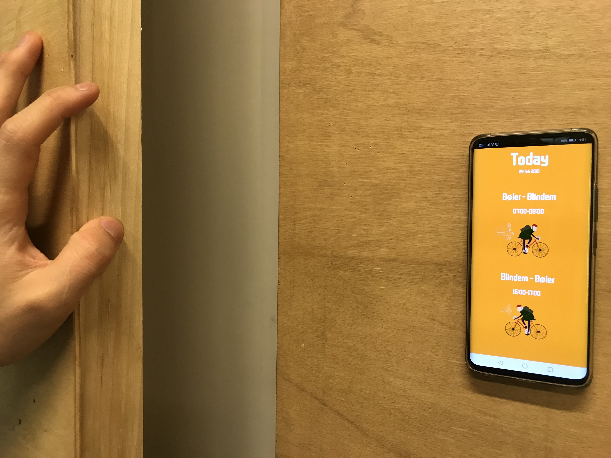

WindBike is an ambient device that use wind direction and wind speed API from Yr.no to forecast the cycling experience to and from my dads work, between Bøler (south in Oslo) and Blindern (north in Oslo). It will tell if it headwind or tailwind and how big/fast is the wind is so you can know before you get dressed in the morning if it's going to be a good bike day or not.
